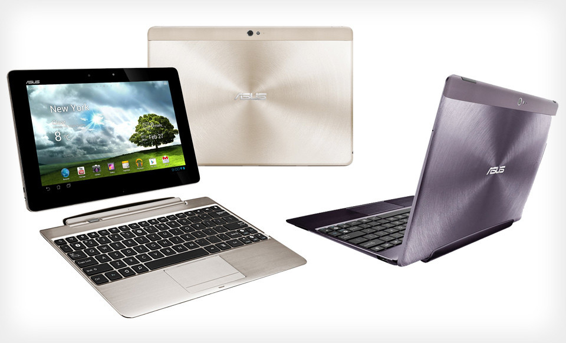

Asus Transformer Pad Infinity TF700T (asus-tf700t)
|
 Asus Transformer Infinity (TF700t) | |
| Manufacturer | ASUS |
|---|---|
| Name | Transformer Infinity |
| Codename | asus-tf700t |
| Released | 2012 |
| Category | testing |
| Original software | Android 4.0.3 on Linux 3.1.10 |
| postmarketOS kernel | mainline grate |
| Hardware | |
| Chipset | Nvidia Tegra 3 T33 |
| CPU | Quad-core 1.6 GHz Cortex-A9 |
| GPU | NVIDIA ULP GeForce GPU 12 cores |
| Display | 1200x1920 Super IPS+ |
| Storage | 32/64 GB |
| Memory | 1 GB |
| Architecture | armv7 |
| Unixbench Whet/Dhry score | 1365.5 |
{kind=link}
| USB Networking |
Works
|
|---|---|
| Flashing |
Works
|
| Touchscreen |
Works
|
| Display |
Works
|
| WiFi |
Works
|
| FDE |
Works
|
| Mainline |
Works
|
| Battery |
Works
|
| 3D Acceleration |
Partial
|
| Audio |
Partial
|
| Bluetooth |
Works
|
| Camera | |
| GPS |
Partial
|
| Mobile data |
Unavailable
|
| SMS |
Unavailable
|
| Calls |
Unavailable
|
| USB OTG |
Works
|
| NFC |
Unavailable
|
| Accelerometer |
Works
|
|---|---|
| Magnetometer | |
| Ambient Light |
Works
|
| Proximity |
Unavailable
|
| Hall Effect |
Works
|
| Ir TX |
Unavailable
|
|---|---|
| TrustZone |
Partial
|
|
This device is based on Tegra 3. See the SoC page for common tips, guides and troubleshooting steps |
Contents
Contributors
- Clamor (Transformers Mainline fork, documentation)
- jja2000 (Testing, documentation)
- ollieparanoid (help in IRC, documentation)
Preparation
- Unlock tool, original Asus source is offline.
Kernel status
KatKernel
- Katkernel is based off the kernel with the same name for the TF300t. An overlap in components makes these kernels mostly compatible hence the rom it belongs to (KatKiss) has been ported to the TF700t aswell. The reason why the kernel is included in this list is because it's currently the most active kernel for the TF700t.
- Source: https://github.com/timduru/tf300t-katkernel/tree/dev-tf700t/
- Version: 3.1.10
- Status: Compiles, is too big to fit on /boot
Mainline (Grate)
- Baseline kernel sources on master: https://github.com/grate-driver/linux
- Proper dts for TF700T is added
- Version: 5.17.0
- Status: Boots. Almost full support.
Installation
How to enter flash modes
Turn tablet off if it is in the system. Then press POWER and VOL DOWN buttons till you feel the vibration. Then release the POWER only. You will enter the bootloader/fastboot. In bootloader you can navigate with VOL DOWN button and to choose option use VOL UP button.
Bootloader version
You should use the latest bootloader available for TF700T which is 10.6.1.14.10. If your bootloader version is lower, please flash latest stock android firmware from Asus.
Installation process
| The bootloader doesn't handle flashing the boot and userdata partition correctly, the official firmware package flashes an "Android blob" to the staging partition with fastboot which triggers an flashing screen on the tablet which copies the data to the correct partitions. pmbootstrap has tools to pack and flash kernel correctly, no worries! |
Preparing rootfs and flashing kernel:
1 $ pmbootstrap init
2 $ pmbootstrap install
3 $ pmbootstrap flasher flash_kernel
Flashing rootfs to eMMC
Warning! |
Preferable way of installing pmOS is installing on microSD card! |
| This may change size of your data partition. You can fix it by resizing partition in TWRP before flashing Android. |
You should proceed very carefully here.
Rootfs should be flashed to the /userdata partition.
Prerequisites: TWRP, at least version 3.3.1-0, binaries for 10.6.1.27.5 bootloader are here.
First, start TWRP (go to bootloader and choose RCK) and then continue with these instructions
1 (computer) $ pmbootstrap export
2 (computer) $ adb shell
3 (twrp) $ umount /dev/block/mmcblk0p8 <- unmounting /data partition
4 (computer again) $ adb push /tmp/postmarketOS-export/asus-tf201.img /dev/block/mmcblk0p8 <- to flash rootfs to /data partition
Hardware status (mainline)
| Status | Hardware | Info |
|---|---|---|
| Y | Booting | Boot image should be less or equal to 8 MB, /boot partition size. |
| Y | Panel | Panasonic VVX10F004B00 or HYDIS HV101WU1-1E1 LCD SuperIPS+ Full HD panel through specific dc bridge controller. Occasionally display may not work on reboot, but if it starts, it will work perfectly fine. |
| Y | HDMI output | HDMI works, but output is max. 1080p due to Tegra 3 limitations. |
| Y | Touchscreen | Used Elantech ELAN-3024-7053 or 5184N FPC-1 REV: 2/3 touchscreen. |
| Y | USB | One full size USB 2.0 in dock or via 40pin adapter. |
| Y | SD cards | MicroSD card and full sized SD card (recognized as USB drive) in dock. |
| Y | Internal memory | eMMC by Hynix. |
| P | GPS | Broadcom GPS BCM4751 is used. |
| Y | WiFi | Uses Azurewave AW-NH665 BCM4330, works but is very slow and unstable. |
| Y | Bluetooth | Uses Azurewave AW-NH665 BCM4330B1. |
| Y | GPIO keys | There is 3 keys on GPIO: Power, Volume up, Volume down.
Additionally GPIO-keys like are LID sensor and Audio dock line-out detect. |
| Y | Vibro | Transformer Infinity has GPIO based vibrator. |
| Y | Dock Keyboard | Both pad and dock have Nuvoton NPCE795LA0BX embedded controller which handles battery data, charging, leds, keyboard and touchpad. Driver of this EC is mainlined and is fully functional. Keyboard and Touchpad work.
Alt Gr can be used for alternate multimedia keys instead of escape, fn keys, volumes and delete. Alt GR + Lock changes the default key mode. |
| Y | Battery/Charger | Driver is based on Texas Instruments bq24725 SMBus Charge Controller driver and GPIO charger but works through pad/dock EC. Charging and charge level of both batteries are shown correctly. |
| Y | PMIC | Transformers use Texas Instruments TPS659110 PMIC and TPS62361 core regulator. |
| P | Sound | Sound codec is RT5631. Kernel driver and tegra_rt5631 glue driver are added to grate master. ALSA configuration files are available. HDMI Audio works |
| N | Voice processor | Transformers use separate Fortemedia FM34NE voice processor. Mainline driver prototype is available but kernel lacks way to get mic status (dsp is internal mic dependent). Is used for voice processing and cancelling. Currently is disabled. |
| Y | Thermal sensor | NCT1008 ON Semiconductor LM90 series thermometer. |
| Y | Orientation sensors | Include Invensense mpu3050 gyroscope with Kionix KXTF9 accelerometer and Aichi AMI306 3-axis digital compass. |
| Y | Light sensor | Driver Dyna-Image AL3010. Brightness regulation works, install iio-sensor-proxy . It's slightly oversensitive. |
| N | Front camera | Aptina mi1040 camera sensor. |
| N | Rear camera | Fujitsu fjm6mo image processor. |
| P | ULP GeForce | GPU Acceleration partially works. |
Usability
Desktop environment
Since 3D acceleration is not available yet, all DE which use it will be painfully slow and laggy.
Currently xfce4 or mate are recommended.
Useful Links
- Asus Transformer device family on Tegra 3 includes also Transformer Prime TF201 and Transformer Pad TF300T
- How to install Gentoo on the TF700t
- Using Kexec to boot Kernels and .img files
- Patches to get TF300t into mainline